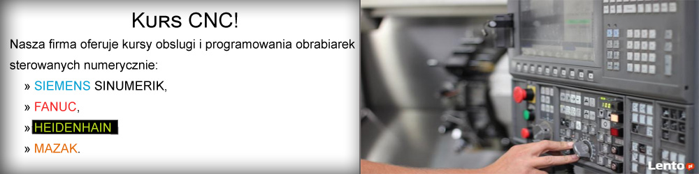
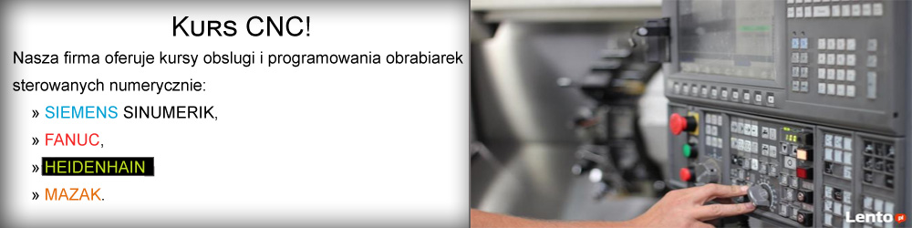
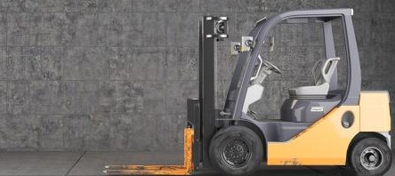

KURS SPAWACZA
W cenê szkolenia wchodzi:
- szkolenie teoretyczne,
- szkolenie praktyczne,
- materia³y,
- egzamin,
- certyfikat egzaminu spawacza,
- ksia¿eczka spawacza,
- ukoñczone 18 lat,
- wykszta³cenie co najmniej podstawowe,
- zaœwiadczenie lekarskie o braku przeciwwskazañ na wykonywanie zawodu spawacza,
- Spawanie w os³onie gazów obojêtnych,
- Spawanie w os³onie CO2,
- Spawanie aluminium w os³onie gazów obojêtnych,
- Spawanie elektryczne elektrod¹ otulona,
- Spawanie drutem proszkowym,
- Spawanie gazowe acetylenowo-tlenowe,
KURS CNC
Kurs – 60 H OPERATOR – PROGRAMISTA CNC:
Pozwala na zdobycie solidnych podstaw z zakresu obs³ugi i programowania Tokarek oraz Frezarek CNC: FANUC, SINUMERIK,
- rysunek techniczny maszynowy,
- metrologia warszstatowa,
- budowy obrabiarek,
- narzêdzi skrawaj¹cych oraz ich doboru,
- programowanie obrabiarek CNC – za pomoca kodów ISO,
- programowanie obrabiarek CNC – dialogowe za pomoca (cykli obróbczych),
- zajêcia praktyczne przy tokarce oraz frezarce CNC.
- budowa obrabiarek sterowanych numerycznie,
- technologie obróbki skrawaniem,
- programowanie obrabiarek cnc iso/dialogowe: fanuc -sinumerik,
- praktyczne ustawianie obrabiarek cnc - tokarki frezarki,
- metrologia warsztatowa,
- rysunek techniczny maszynowy,

KURS OPERATORA WÓZKA WID£OWEGO
Nasza firma oferuje kursy obslugi wózka wid³owego, W cenê szkolenia wchodzi:
- teoria, praktyka, ilustrowane materia³y, pytania kontrolne,
- seminarium bezpiecznej wymiany butli gazowych w wózkach jezdniowych,
- certyfikaty w jêzyku polskim oraz angielskim na piêæ typów wózków (na³adownych, unosz¹cych,podnoœnikowych, ci¹gnikowych, specjalnych ),
- egzamin przed komisj¹ Ministra Gospodarki ,

KURS AUTOCAD
Nasza firma oferuje kursy oprogramowania AUTOCAD, celem szkolenia jest zapoznanie z:
- Podstawowe narzêdzia i techniki pracy,
- Organizacja przestrzeni roboczej,
- Przestrzeñ modelu,
- Polecenia rysunkowe i modyfikacyjne,
- Praca na warstwach,
- Opisywanie i wymiarowanie,
- Realizacja praktycznych projektów,